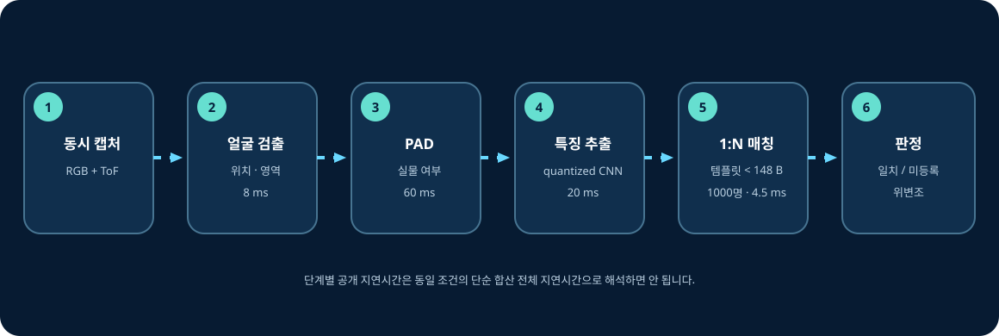

RGB와 ToF를 취득한다
RGB 프레임은 얼굴의 시각 정보를, ToF는 8×8 거리 정보를 제공합니다.
03 · Technical guide
입력 프레임이 “누구인지”라는 결과가 되기까지, 각 단계의 목적과 출력이 어떻게 다음 단계로 넘어가는지 설명합니다.
End-to-end flow

RGB 프레임은 얼굴의 시각 정보를, ToF는 8×8 거리 정보를 제공합니다.
전체 영상에서 얼굴이 있는 영역을 찾아 이후 연산의 대상을 좁힙니다. 공개 수치는 8 ms입니다.
RGB와 ToF 단서를 이용해 사진·영상·마스크 같은 presentation attack 가능성을 평가합니다. 공개 수치는 60 ms입니다.
양자화된 CNN이 얼굴을 비교 가능한 수치 표현으로 바꿉니다. 공개 수치는 20 ms입니다.
입력 템플릿을 최대 1,000명의 등록 템플릿과 비교하는 예시가 공개되었고, 이 매칭 수치는 4.5 ms입니다.
일치, 미등록 또는 위변조 탐지 결과를 HMI·도어 제어·로그 정책으로 연결합니다.
사용자 얼굴에서 템플릿을 만들어 신원 정보와 함께 등록합니다.
새 템플릿을 등록 DB 전체와 비교해 가장 가까운 후보를 찾습니다.
점수와 정책 기준을 적용해 matched, unknown 또는 fraud 결과를 만듭니다.
cosine similarity, Euclidean distance 등 어떤 metric을 쓰는지와 threshold 값은 확인되지 않았으므로 특정 방식으로 단정하지 않습니다.